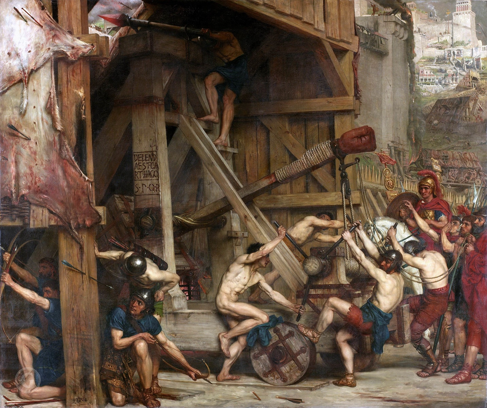
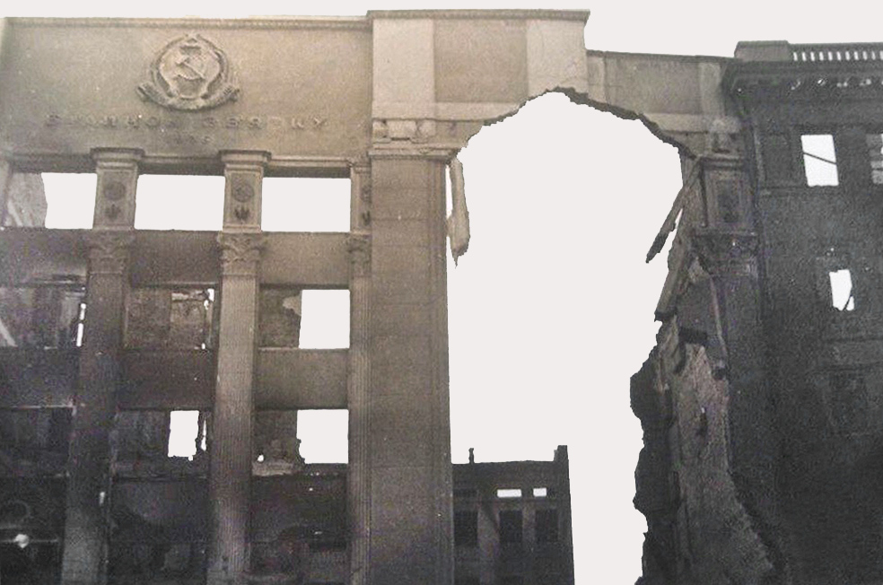

Welcome to Wikipedia
the free encyclopedia that anyone can edit
From today's featured article
The Third Punic War was the third and last of the Punic Wars between Carthage and Rome, and lasted from 149 to 146 BC. The war was fought in what is now northern Tunisia. In 149 BC anti-Carthaginian factions in Rome manufactured a pretext for war. The Carthaginians surrendered all of their weapons, but the Romans pressed on to besiege the city of Carthage (siege engine depicted). The Romans suffered repeated setbacks. A new Roman commander took over in 148 BC, and fared equally badly. Scipio Aemilianus was appointed commander in Africa for 147 BC; he tightened the siege and prevented supplies from entering. He then destroyed Carthage's field army and forced the remaining pro-Carthaginian towns to surrender. In spring 146 BC the Romans launched their final assault, systematically destroying the city and killing its inhabitants; 50,000 survivors were sold into slavery. The formerly Carthaginian territories became the Roman province of Africa. (This article is part of a featured topic: Punic Wars.)
Did you know ...
hat Kyiv's Central Post Office was built after military forces deliberately destroyed its predecessor (pictured) less than a year after it was completed? ... that Kaiu Shirai said that some parts of his story The Promised Neverland came from nightmares? ... that on 9 January 1917, German Emperor Wilhelm II agreed to implement unrestricted submarine warfare? ... that Dreamer Isioma began learning music theory at the age of three? ... that the government of Victoria, Australia, has a program to remove 110 level crossings by 2030, the fastest rate in the state's history? ... that witchcraft historian Malcolm Gaskill documented a real-life 17th-century witch hunt in Springfield, Massachusetts? ... that the 1961 Indonesian census was the country's first since 1930 and the first since gaining independence from the Netherlands? ... that the name Zenock is misspelled in almost every published edition of the Book of Mormon?
In the news

Michael Smith
- Supporters of former Brazilian president Jair Bolsonaro invade the National Congress, the Supreme Federal Court and the Palácio do Planalto.
- Supporters of former Brazilian president Jair Bolsonaro invade the National Congress, the Supreme Federal Court and the Palácio do Planalto.
- Michael Smith (pictured) wins the PDC World Darts Championship.
- Croatia adopts the euro and joins the Schengen Area.
- Pope Emeritus Benedict XVI dies at the age of 95.
- Brazilian footballer Pelé dies at the age of 82.
On this day
- 1857 – An earthquake registering 7.9 Mw ruptured part of the San Andreas Fault in central and southern California.
- 1970 – The Presidential Council for Minority Rights, an appointed body to review legislation and prevent discrimination against minorities, was created in Singapore.
- 1978 – Iranian Revolution: Protests took place in Qom after an article insulting Ruhollah Khomeini was published.
- 1991 – Representatives from the United States and Iraq met at the Geneva Peace Conference to find a peaceful resolution to the Iraqi invasion of Kuwait.
- 2011 – In poor weather conditions, Iran Air Flight 277 (plane pictured) crashed near Urmia Airport, Iran, killing 78 of the 105 people on board.
From today's featured list
Paul McCartney
English musician Paul McCartney has recorded hundreds of songs over his career of more than sixty years. As a member of the Beatles, he formed a songwriting partnership with bandmate John Lennon that became one of the most celebrated in music history. Some of McCartney's famous Beatles compositions include "Hey Jude", "Penny Lane", "Let It Be" and "Yesterday", the last of which being one of the most covered songs of all time. After the band's break-up, he recorded his 1970 lo-fi album McCartney, which he composed and performed alone, containing songs including "Maybe I'm Amazed". For the remainder of the 1970s, McCartney released music with the rock band Wings, recording many of his well-known songs, including "Live and Let Die", "Jet" and "Band on the Run". McCartney collaborated with Michael Jackson on "The Girl Is Mine" from Jackson's 1982 album Thriller and again a year later on "Say Say Say" and "The Man" on McCartney's album Pipes of Peace. In addition to writing his own songs, McCartney has recorded cover versions of songs throughout his career. (Full list...)